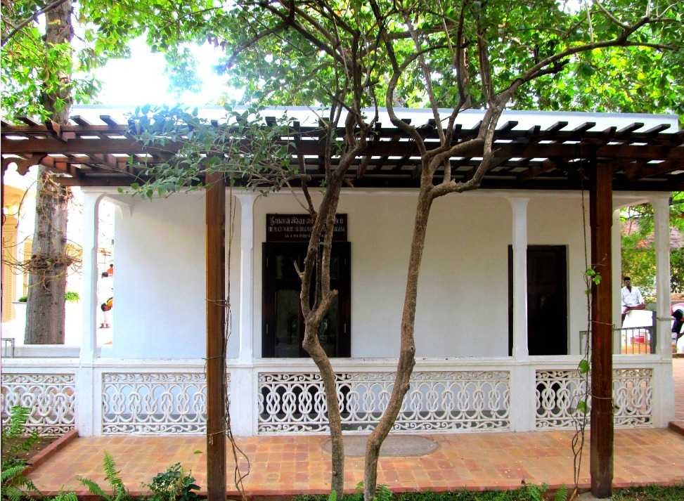
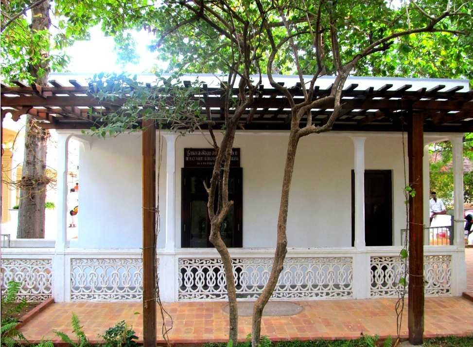

Thiruvannamalai
Tiruvannamalai, also known as Arunachala, is one of the greatest Saivite shrines in Tamil Nadu, India, on a sprawling 24 acre temple campus, drawing hundreds of thousands of pilgrims every full moon. The hill here is considered to be a manifestation of Shiva. Tiruvannamalai is one of the Panchabhoota Stalams signifying the 5 elements of wind (Kalahasti), water (Tiruvanaikkal), fire (Tiruvannamalai), earth (Thiruvarur) and space (Chidambaram). Kartikai Deepam festival here is of great significance. Manikkavacakar composed his Tiruvempavai here.The Paatala Linga shrine is connected with the spiritual savant Ramana Maharishi. Arunagiri Nathar began composing his Tiruppukazh here at this temple. The Arunachaleshwara temple for Lord Shiva was built between the 16th and the 17th centuries by the kings of the Vijayanagara empire. The temple is famous for its massive gopurams[6]. The 11 tiered East Rajagopuram towers to a height of 217 feet, while the fortified walls pierced with 4 gopura entrances offer a formidable look to this vast temple complex . The Pei Gopuram, Tirumanjana Gopuram and Ammanaiammal gopuram are the other three. The 1000 pillared hall and the temple tank were built by Krishna Deva Rayarar of Vijayanagar. Each of the prakarams has a huge Nandi and several towers such as the Vallala Maharaja Gopuram and Kili Gopuram. It is one of the panchabhoota sthalams - Lord Shiva temples representing the five principal elements. This is the Tejo Sthalam among the Pancha Bootha Sthalams representing Fire. The others are - Tiruvanaikavil (Appu sthalam - Water) Kanchipuram (Prithvi sthalam - Earth) Kalahasti (Vayu sthalam - Air) Chidambaram (Akasa sthalam - Sky).
 
